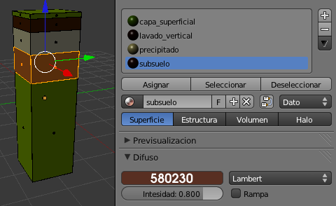

Material didáctico: Perfil del suelo
Nuestro objetivo es conseguir una bonita representación del perfil del suelo con sus sucesivas capas, llamadas horizontes.
El cubo por defecto escalado en el eje Z ("SZ") nos sirve para la representación de los cinco horizontes.
En Modo Edición  añadimos cuatro bucles de lados ("Control_R").
añadimos cuatro bucles de lados ("Control_R").

Ya están los cinco bucles de caras que rodean horizontalmente al cubo inicial. A cada unos de esos bucles le damos un color. Como es el cubo por defecto ya tiene asignado un material; de no ser así se lo asignamos ahora y lo llamamos capa_superficial. Estas son sus características (no olvidaremos nunca pulsar Asignar):
Seleccionamos  el segundo bucle de caras ("Alt_clic derecho") y le asignamos un segundo material llamado lavado_vertical.
el segundo bucle de caras ("Alt_clic derecho") y le asignamos un segundo material llamado lavado_vertical.

Repetimos lo mismo con el tercer bucle de caras. A este nuevo material le llamamos precipitado.
El cuarto bucle tiene un material llamado subsuelo.
Y el inferior se llama roca_madre.
Con un plano para el suelo y una iluminación básica este es el primer render.
Con algo de decoración en la parte superior conseguimos un render para elaborar un material como este.